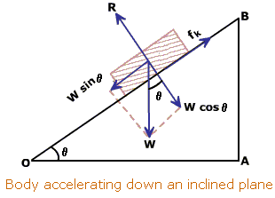
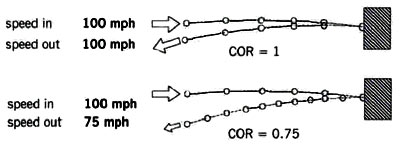

I’m sure you all know what the speed of an object is but here’s a formal definition anyway: it is the distance travelled in a given unit of time. So if I travel 3 miles in one hour, my speed is 3 miles per hour (mph). Velocity is another name for speed, but it also has a direction in which the object is going. So a car travelling at 30mph to the North would have a speed of 30mph and a velocity of 30mph to the North.
Acceleration can be thought of as the speed of which your velocity increases. What do I mean by this? If my velocity is increasing by 3 metres per second (m/s) every second then after 10 seconds my velocity will be 30 metres per second faster than it was when I started. The rate of increase of velocity (in this case 3m/s every second) is called the acceleration of an object. It is frequently measured in metres per second squared (m/s2) because it is the increase of velocity per second every second, since it is per second per second, the seconds are squared.
Every object has a mass and a weight. Its mass is how much ‘stuff’ there is in the object (usually measured in kilograms Kg), and this is the same regardless of where you are. Its weight however is subtly different, and is measured in a special unit called Newtons (N). On Earth, the Earth’s gravity is constantly acting upon every object. This causes the object to want to accelerate (at approximately 9.8 m/s2 downwards). The mass times this acceleration gives you the ‘weight’ so an apple of 10Kg mass is actually 98N of weight (and very large for an apple!). If you were to go to say, Mars which has a much lower gravity then the mass would be unchanged at 10Kg. However since Mars’ gravity only causes an acceleration of 3.8 m/s2, the object would only would only weigh 38N. The amount of ‘stuff’ in the apple hasn’t changed, so its mass is the same, but because Mars has much less gravity it weighs less, and would fall to the ground much slower and be much easier to pick up.
Every object is subject to ‘inertia’. Inertia is the idea that if you don’t apply any external forces to an object, it will never change its velocity. But hang on you say, if I kick a football along a field it doesn’t just keep going, what’s going on? Is this object defying inertia somehow? No, of course not, the football is merely being acted upon by the external force of friction. So what exactly is friction? Friction, is a force that opposes movement in any direction and tries to get objects to stop. Friction also stops objects from moving in the first place, and occurs whenever two objects are touching (even something like a plane has friction, because of all of the air molecules it touches.
Each object has a ‘coefficient of friction’, which is proportional to the maximum friction force it can exert on other objects (this is the largest force that can be applied to the object before it starts moving if it is at rest). Something very ‘sticky’ would have a very high coefficient of friction, as it would be very difficult to move something along it. The equation for the force due to friction is given by Flim= μR where Flim is the maximum amount of friction the object can generate in this case (called limiting friction), μ is the ‘coefficient of friction’ which is a bit like saying how ‘sticky’ an object is, and R is the normal contact force. Imagine two objects: a table and a ball. The normal contact force if you had the ball directly sitting on the table with the table flat would just be the weight of the ball. However, if you tilt the table then the ball’s weight is no longer acting perpendicular to the table (at right angles or at a ‘normal’ ), so less of the weight makes up the normal contact force.
Image source: http://image.tutorvista.com/content/motion-laws/inclined-plane-acceleration.gif
When two objects collide one of two things can happen: they crumple up into one object, or the objects will bounce. But not all things bounce equally, a ball will bounce a lot on concrete and much less on a thick carpet. What is this determined by? Something called the ‘coefficient of restitution’ determines how the collision will end up. This value (usually represented as ‘e’) is between 0 and 1, with 1 meaning that it bounces up at the same speed as it bounced down. e is defined as the speed of separation divided by the speed of approach.
Image source: http://www.golfclub-technology.com/images/corspeed.jpg.pagespeed.ce.hTD-1Q6iw6.jpg